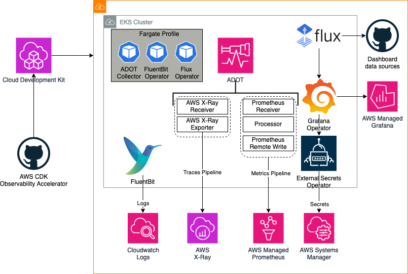
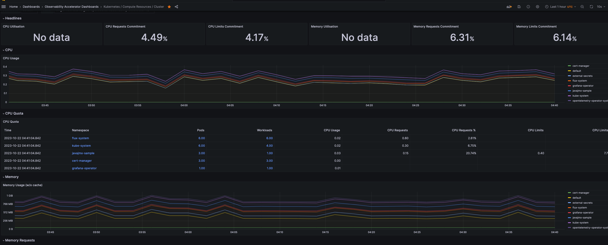
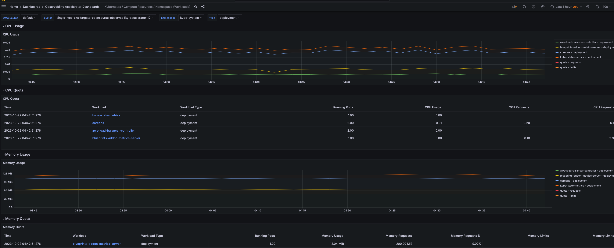
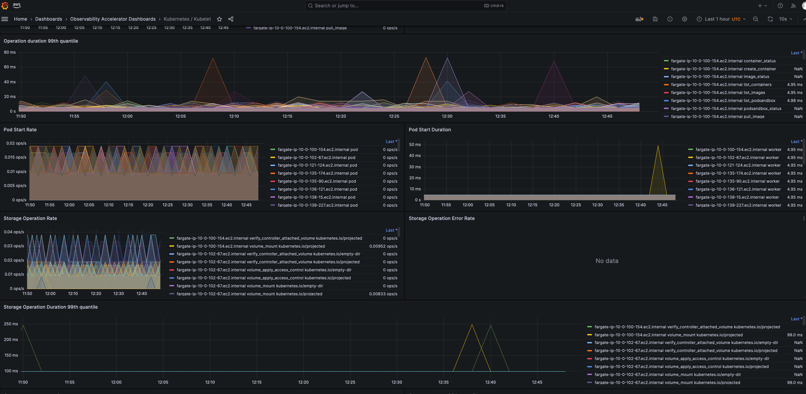
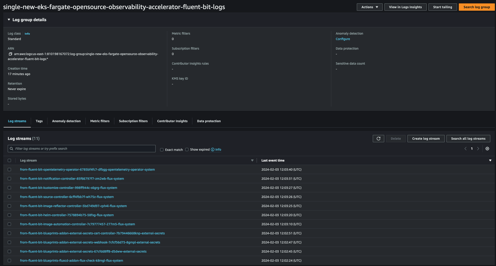

Single Cluster Opensource Observability - Fargate¶
Architecture¶
The following figure illustrates the architecture of the pattern we will be deploying for Single EKS Fargate Open Source Observability pattern using open source tooling such as AWS Distro for Open Telemetry (ADOT), FluentBit (Logs), Amazon Managed Service for Prometheus and Amazon Managed Grafana:

Metrics and Traces¶
AWS Distro for OpenTelemetry (ADOT) is a secure, AWS-supported distribution of the OpenTelemetry project. With ADOT, users can instrument their applications just once to send correlated metrics and traces to multiple monitoring solutions.
The ADOT Collector has the concept of a pipeline which comprises three key types of components, namely, receiver, processor, and exporter. A receiver is how data gets into the collector. It accepts data in a specified format, translates it into the internal format and passes it to processors and exporters defined in the pipeline. It can be pull or push based. A processor is an optional component that is used to perform tasks such as batching, filtering, and transformations on data between being received and being exported. An exporter is used to determine which destination to send the metrics, logs or traces.
In the above architecture, the kubelet on a worker node in a Kubernetes cluster exposes resource metrics such as CPU, memory, disk, and network usage at the /metrics/cadvisor endpoint. However, in EKS Fargate networking architecture, a pod is not allowed to directly reach the kubelet on that worker node. Hence, the ADOT Collector calls the Kubernetes API Server to proxy the connection to the kubelet on a worker node, and collect kubelet's cAdvisor metrics for workloads on that node. These metrics are made available in Prometheus format. Therefore, the collector uses an instance of Prometheus Receiver as a drop-in replacement for a Prometheus server and scrapes these metrics from the Kubernetes API server endpoint. Using Kubernetes service discovery, the receiver can discover all the worker nodes in an EKS cluster. Hence, more than one instances of ADOT Collector will suffice to collect resource metrics from all the nodes in a cluster. Having a single instance of ADOT collector can be overwhelming during higher loads so always recommend to deploy more than one collector.
Logs¶
With Amazon EKS on Fargate, you can deploy pods without allocating or managing your Kubernetes nodes. This removes the need to capture system-level logs for your Kubernetes nodes. To capture the logs from your Fargate pods, we use Fluent Bit to forward the logs directly to CloudWatch. This enables you to automatically route logs to CloudWatch without further configuration or a sidecar container for your Amazon EKS pods on Fargate. For more information about this, see Fargate logging in the Amazon EKS documentation and Fluent Bit for Amazon EKS on the AWS Blog. This solution captures the STDOUT and STDERR input/output (I/O) streams from your container and sends them to CloudWatch through Fluent Bit, based on the Fluent Bit configuration established for the Amazon EKS cluster on Fargate
Objective¶
- Deploys one production grade Amazon EKS cluster.
- AWS Distro For OpenTelemetry Operator and Collector for Metrics and Traces
- Logs with AWS for FluentBit
- Installs Grafana Operator to add AWS data sources and create Grafana Dashboards to Amazon Managed Grafana.
- Installs FluxCD to perform GitOps sync of a Git Repo to EKS Cluster. We will use this later for creating Grafana Dashboards and AWS datasources to Amazon Managed Grafana. You can also use your own GitRepo to sync your own Grafana resources such as Dashboards, Datasources etc. Please check our One observability module - GitOps with Amazon Managed Grafana to learn more about this.
- Installs External Secrets Operator to retrieve and Sync the Grafana API keys.
- Amazon Managed Grafana Dashboard and data source
- Alerts and recording rules with Amazon Managed Service for Prometheus
Prerequisites:¶
Ensure that you have installed the following tools on your machine.
Deploying¶
Please follow the Deploying instructions of the New EKS Cluster Open Source Observability Accelerator pattern till step 7. At step 8, execute the following
make build
make pattern single-new-eks-fargate-opensource-observability deploy
Verify the resources¶
Run update-kubeconfig command. You should be able to get the command from CDK output message.
aws eks update-kubeconfig --name single-new-eks-fargate-opensource-observability-accelerator --region <your region> --role-arn arn:aws:iam::xxxxxxxxx:role/single-new-eks-fargate-op-singleneweksfargateopens-xxxxxxxx
Let’s verify the resources created by steps above.
kubectl get nodes -o wide
Output:
NAME STATUS ROLES AGE VERSION INTERNAL-IP EXTERNAL-IP OS-IMAGE KERNEL-VERSION CONTAINER-RUNTIME
fargate-ip-10-0-100-154.ec2.internal Ready <none> 12d v1.27.1-eks-2f008fe 10.0.100.154 <none> Amazon Linux 2 5.10.192-183.736.amzn2.x86_64 containerd://1.6.6
fargate-ip-10-0-102-67.ec2.internal Ready <none> 12d v1.27.1-eks-2f008fe 10.0.102.67 <none> Amazon Linux 2 5.10.192-183.736.amzn2.x86_64 containerd://1.6.6
fargate-ip-10-0-121-124.ec2.internal Ready <none> 7d11h v1.27.1-eks-2f008fe 10.0.121.124 <none> Amazon Linux 2 5.10.192-183.736.amzn2.x86_64 containerd://1.6.6
fargate-ip-10-0-135-174.ec2.internal Ready <none> 12d v1.27.1-eks-2f008fe 10.0.135.174 <none> Amazon Linux 2 5.10.192-182.736.amzn2.x86_64 containerd://1.6.6
fargate-ip-10-0-135-90.ec2.internal Ready <none> 12d v1.27.1-eks-2f008fe 10.0.135.90 <none> Amazon Linux 2 5.10.192-182.736.amzn2.x86_64 containerd://1.6.6
fargate-ip-10-0-136-121.ec2.internal Ready <none> 12d v1.27.1-eks-2f008fe 10.0.136.121 <none> Amazon Linux 2 5.10.192-182.736.amzn2.x86_64 containerd://1.6.6
fargate-ip-10-0-138-15.ec2.internal Ready <none> 2d8h v1.27.6-eks-f8587cb 10.0.138.15 <none> Amazon Linux 2 5.10.192-183.736.amzn2.x86_64 containerd://1.6.6
fargate-ip-10-0-139-227.ec2.internal Ready <none> 12d v1.27.1-eks-2f008fe 10.0.139.227 <none> Amazon Linux 2 5.10.192-182.736.amzn2.x86_64 containerd://1.6.6
fargate-ip-10-0-148-152.ec2.internal Ready <none> 12d v1.27.1-eks-2f008fe 10.0.148.152 <none> Amazon Linux 2 5.10.192-182.736.amzn2.x86_64 containerd://1.6.6
fargate-ip-10-0-151-22.ec2.internal Ready <none> 12d v1.27.1-eks-2f008fe 10.0.151.22 <none> Amazon Linux 2 5.10.192-182.736.amzn2.x86_64 containerd://1.6.6
fargate-ip-10-0-158-82.ec2.internal Ready <none> 12d v1.27.1-eks-2f008fe 10.0.158.82 <none> Amazon Linux 2 5.10.192-182.736.amzn2.x86_64 containerd://1.6.6
fargate-ip-10-0-161-151.ec2.internal Ready <none> 2d8h v1.27.6-eks-f8587cb 10.0.161.151 <none> Amazon Linux 2 5.10.192-183.736.amzn2.x86_64 containerd://1.6.6
fargate-ip-10-0-164-251.ec2.internal Ready <none> 87m v1.27.6-eks-f8587cb 10.0.164.251 <none> Amazon Linux 2 5.10.192-183.736.amzn2.x86_64 containerd://1.6.6
fargate-ip-10-0-165-99.ec2.internal Ready <none> 2d9h v1.27.1-eks-2f008fe 10.0.165.99 <none> Amazon Linux 2 5.10.192-183.736.amzn2.x86_64 containerd://1.6.6
fargate-ip-10-0-167-115.ec2.internal Ready <none> 12d v1.27.1-eks-2f008fe 10.0.167.115 <none> Amazon Linux 2 5.10.192-182.736.amzn2.x86_64 containerd://1.6.6
fargate-ip-10-0-178-170.ec2.internal Ready <none> 12d v1.27.1-eks-2f008fe 10.0.178.170 <none> Amazon Linux 2 5.10.192-182.736.amzn2.x86_64 containerd://1.6.6
fargate-ip-10-0-186-44.ec2.internal Ready <none> 87m v1.27.6-eks-f8587cb 10.0.186.44 <none> Amazon Linux 2 5.10.192-183.736.amzn2.x86_64 containerd://1.6.6
kubectl get pods -o wide -A
NAMESPACE NAME READY STATUS RESTARTS AGE IP NODE NOMINATED NODE READINESS GATES
cert-manager cert-manager-8694c7d4fd-pwmhh 1/1 Running 0 12d 10.0.135.90 fargate-ip-10-0-135-90.ec2.internal <none> <none>
cert-manager cert-manager-cainjector-744cb68868-m2j25 1/1 Running 0 12d 10.0.136.121 fargate-ip-10-0-136-121.ec2.internal <none> <none>
cert-manager cert-manager-webhook-5f6fff764b-4nq5q 1/1 Running 0 12d 10.0.151.22 fargate-ip-10-0-151-22.ec2.internal <none> <none>
default otel-collector-amp-collector-7cc9cfb77f-kjp5b 1/1 Running 0 2d9h 10.0.165.99 fargate-ip-10-0-165-99.ec2.internal <none> <none>
external-secrets blueprints-addon-external-secrets-797c97cc56-qnqvb 1/1 Running 0 12d 10.0.189.201 fargate-ip-10-0-189-201.ec2.internal <none> <none>
external-secrets blueprints-addon-external-secrets-cert-controller-75ccc646775f6 1/1 Running 0 12d 10.0.100.154 fargate-ip-10-0-100-154.ec2.internal <none> <none>
external-secrets blueprints-addon-external-secrets-webhook-749d46f5df-slb88 1/1 Running 0 12d 10.0.189.119 fargate-ip-10-0-189-119.ec2.internal <none> <none>
flux-system helm-controller-69ff5c96c7-xkbpc 1/1 Running 0 12d 10.0.190.34 fargate-ip-10-0-190-34.ec2.internal <none> <none>
flux-system image-automation-controller-65887476b7-8tvl6 1/1 Running 0 12d 10.0.167.115 fargate-ip-10-0-167-115.ec2.internal <none> <none>
flux-system image-reflector-controller-57847dc9cf-6pbts 1/1 Running 0 12d 10.0.178.170 fargate-ip-10-0-178-170.ec2.internal <none> <none>
flux-system kustomize-controller-68c6c766-hrxh4 1/1 Running 0 12d 10.0.102.67 fargate-ip-10-0-102-67.ec2.internal <none> <none>
flux-system notification-controller-5dbc9fc9c4-b7gvt 1/1 Running 0 12d 10.0.188.107 fargate-ip-10-0-188-107.ec2.internal <none> <none>
flux-system source-controller-5b669588f-jtgc6 1/1 Running 0 12d 10.0.148.152 fargate-ip-10-0-148-152.ec2.internal <none> <none>
grafana-operator grafana-operator-7d7ccc88f4-fw99n 1/1 Running 0 12d 10.0.99.84 fargate-ip-10-0-99-84.ec2.internal <none> <none>
kube-system aws-load-balancer-controller-7c7f88558d-rlzh6 1/1 Running 0 12d 10.0.158.82 fargate-ip-10-0-158-82.ec2.internal <none> <none>
kube-system aws-load-balancer-controller-7c7f88558d-v797p 1/1 Running 1 (5h40m ago) 12d 10.0.190.41 fargate-ip-10-0-190-41.ec2.internal <none> <none>
kube-system blueprints-addon-metrics-server-6765c9bc59-85jqq 1/1 Running 0 90m 10.0.186.44 fargate-ip-10-0-186-44.ec2.internal <none> <none>
kube-system coredns-6549dc85b9-586mh 1/1 Running 0 12d 10.0.139.227 fargate-ip-10-0-139-227.ec2.internal <none> <none>
kube-system coredns-6549dc85b9-n6xdr 1/1 Running 0 12d 10.0.135.174 fargate-ip-10-0-135-174.ec2.internal <none> <none>
kube-system kube-state-metrics-596b5dbf46-c9mdt 1/1 Running 0 90m 10.0.164.251 fargate-ip-10-0-164-251.ec2.internal <none> <none>
opentelemetry-operator-system opentelemetry-operator-5ddbdcdc57-nh5dr 2/2 Running 0 7d11h 10.0.121.124 fargate-ip-10-0-121-124.ec2.internal <none> <none>
kubectl get ns # Output shows all namespace
NAME STATUS AGE
aws-for-fluent-bit Active 12d
cert-manager Active 12d
default Active 12d
external-secrets Active 12d
flux-system Active 12d
grafana-operator Active 12d
kube-node-lease Active 12d
kube-public Active 12d
kube-system Active 12d
opentelemetry-operator-system Active 7d11h
Visualize Dashboards in Amazon Managed Grafana¶
Login to your Grafana workspace and navigate to the Dashboards panel. You should see a number of dashboards under Observability Accelerator Dashboards. Open Kubernetes / Compute Resources / Cluster and Kubernetes / Kubelet Dashboards, you should see data as below
- Cluster Dashboards

You can also visualize cluster metrics for specific namespaces by clicking on a particular namespace. For instance, below is a snapshot of the kube-system namespace.

- Kubelet Dashboard

Deploy Sample Java Workload¶
We'll deploy a sample java workload in our newly created EKS cluster running on AWS Fargate. To do that, follow the instructions in New EKS Cluster Java Open Source Observability Accelerator pattern till step number 4.
Since we're deploying the sample workload on AWS Fargate compute, we need to create a Fargate profile for running the java application.
Execute the following command to create a Fargate profile
SAMPLE_TRAFFIC_NAMESPACE=javajmx-sample
CLUSTER_NAME=single-new-eks-fargate-opensource-observability-accelerator
eksctl create fargateprofile --namespace $SAMPLE_TRAFFIC_NAMESPACE --cluster $CLUSTER_NAME --name sample-java-workload-profile
Check if the profile got created successfully by running
$ eksctl get fargateprofile --cluster $CLUSTER_NAME
NAME SELECTOR_NAMESPACE SELECTOR_LABELS POD_EXECUTION_ROLE_ARN SUBNETS TAGS STATUS
sample-java-workload-profile javajmx-sample <none> arn:aws:iam::200202725330:role/eksctl-single-new-eks-farga-FargatePodExecutionRole-pBT3sLM15PYx subnet-0d9ae01b957d93732,subnet-07e7079de2ee19ee1,subnet-0d1f688becf9864ff <none> ACTIVE
singleneweksfargateopensourceo-153ba837dcf44bbe84881aa5336f0bf1 default <none> arn:aws:iam::200202725330:role/single-new-eks-fargate-op-singleneweksfargateopens-1UCAAI02CIG27 subnet-0d9ae01b957d93732,subnet-07e7079de2ee19ee1,subnet-0d1f688becf9864ff <none> ACTIVE
singleneweksfargateopensourceo-153ba837dcf44bbe84881aa5336f0bf1 kube-system <none> arn:aws:iam::200202725330:role/single-new-eks-fargate-op-singleneweksfargateopens-1UCAAI02CIG27 subnet-0d9ae01b957d93732,subnet-07e7079de2ee19ee1,subnet-0d1f688becf9864ff <none> ACTIVE
singleneweksfargateopensourceo-8faabc1806d44e4bb0f656aa6785e276 cert-manager <none> arn:aws:iam::200202725330:role/single-new-eks-fargate-op-singleneweksfargateopens-FDF881YCTAAT subnet-0d9ae01b957d93732,subnet-07e7079de2ee19ee1,subnet-0d1f688becf9864ff <none> ACTIVE
singleneweksfargateopensourceo-8faabc1806d44e4bb0f656aa6785e276 external-secrets <none> arn:aws:iam::200202725330:role/single-new-eks-fargate-op-singleneweksfargateopens-FDF881YCTAAT subnet-0d9ae01b957d93732,subnet-07e7079de2ee19ee1,subnet-0d1f688becf9864ff <none> ACTIVE
singleneweksfargateopensourceo-8faabc1806d44e4bb0f656aa6785e276 flux-system <none> arn:aws:iam::200202725330:role/single-new-eks-fargate-op-singleneweksfargateopens-FDF881YCTAAT subnet-0d9ae01b957d93732,subnet-07e7079de2ee19ee1,subnet-0d1f688becf9864ff <none> ACTIVE
singleneweksfargateopensourceo-8faabc1806d44e4bb0f656aa6785e276 grafana-operator <none> arn:aws:iam::200202725330:role/single-new-eks-fargate-op-singleneweksfargateopens-FDF881YCTAAT subnet-0d9ae01b957d93732,subnet-07e7079de2ee19ee1,subnet-0d1f688becf9864ff <none> ACTIVE
singleneweksfargateopensourceo-8faabc1806d44e4bb0f656aa6785e276 opentelemetry-operator-system <none> arn:aws:iam::200202725330:role/single-new-eks-fargate-op-singleneweksfargateopens-FDF881YCTAAT subnet-0d9ae01b957d93732,subnet-07e7079de2ee19ee1,subnet-0d1f688becf9864ff <none> ACTIVE
Now run step 5 of the instructions at New EKS Cluster Java Open Source Observability Accelerator pattern.
Check whether the Sample Java Workload got deployed successfully
kubectl get po -n $SAMPLE_TRAFFIC_NAMESPACE
NAME READY STATUS RESTARTS AGE
tomcat-bad-traffic-generator 1/1 Running 0 2d9h
tomcat-example-fcbb8856b-s4mq8 1/1 Running 0 2d9h
tomcat-traffic-generator 1/1 Running 0 2d9h
You should now see a new dashboard named Java/JMX, under Observability Accelerator Dashboards:

Viewing Logs¶
Amazon EKS on Fargate offers a built-in log router based on Fluent Bit. This means that you don't explicitly run a Fluent Bit container as a sidecar, but Amazon runs it for you. All that you have to do is configure the log router. The configuration happens through a dedicated ConfigMap. Logs are collected and exported to Amazon CloudWatch Logs, which enables you to centralize the logs from all of your systems, applications,
and AWS services that you use, in a single, highly scalable service. By default, the logs are exported to us-east-1 region but you can modify the ConfigMap for your region of choice. At least one supported OUTPUT plugin has to be provided in the ConfigMap to enable logging. You can also modify the destination from cloudwatch to Cloudwatch (default), Amazon OpenSearch Service or Kinesis Data Firehose. Read more about EKS Fargate logging.

Teardown¶
You can teardown the whole CDK stack with the following command:
make pattern single-new-eks-fargate-opensource-observability destroy